User manual for the sign-up and scheduling website
NeighborsAdministratorTechnician
2026 season · Plymouth, MN
Contents
1OverviewWhat the site does and how a season works
2For neighborsSigning up, changing or cancelling, service day
3Staff loginAdministrator and technician passwords
4For the administratorDates, sign-ups, map, exports, texts, settings
5For the technicianRunning a service day from your phone
6Text messagesEvery text the site sends, and when
7Questions and troubleshooting
AAppendix: hosting settingsRailway variables, Google Maps, Twilio
About the screenshots. They were taken with made-up sample neighbors and
phone numbers. In these pictures the maps are shown as a plain grid with the same pins and route line. On the live
site you'll see real Google Maps streets underneath.
Chapter 1
Overview
The website lets Terra Vista neighbors sign up to have their irrigation system winterized. It schedules everyone
onto service days, plans the technician's route, and texts neighbors as the technician gets close.
The four pages
Page
Who uses it
What it's for
Main page /
Neighbors
The sign-up form. This is the address to share with the neighborhood.
Private registration link
Each neighbor
Sent to them by text. Shows their date and place in line, and lets them change or cancel.
/admin.html
Administrator
Open dates, manage every sign-up, see the map, export a spreadsheet, check texts.
/tech.html
Technician
The day's route, "up next", mark houses complete, share location.
The staff pages are password protected. The administrator password also opens the technician page.
How a season works
1. Open datesThe administrator adds service dates.
2. Neighbors sign upThey pick every day that works, and a time of day for each.
3. Route is plannedThe site orders each day's houses by location and time of day.
4. Service dayThe technician starts the day. Texts go out as each house comes up.
5. Wrap upUnfinished houses move to the next open day.
Morning, afternoon, or any time
For each day that works, a neighbor picks one of:
Morning They want the morning of that day.
Afternoon They want the afternoon.
Any time Either is fine. The site places them in whichever half fits the route best.
Each date has a morning limit (10) and an afternoon limit (15), 25 houses in total. The administrator
can change these for any date. When one half fills up, neighbors can still choose the other half or "any time" for
that date. When both halves are full, the date shows Full.
A neighbor is scheduled on the earliest date they picked that has room for the time they chose. Their other
dates are kept as backups in case the visit has to move.
Chapter 2
For neighbors
Signing up
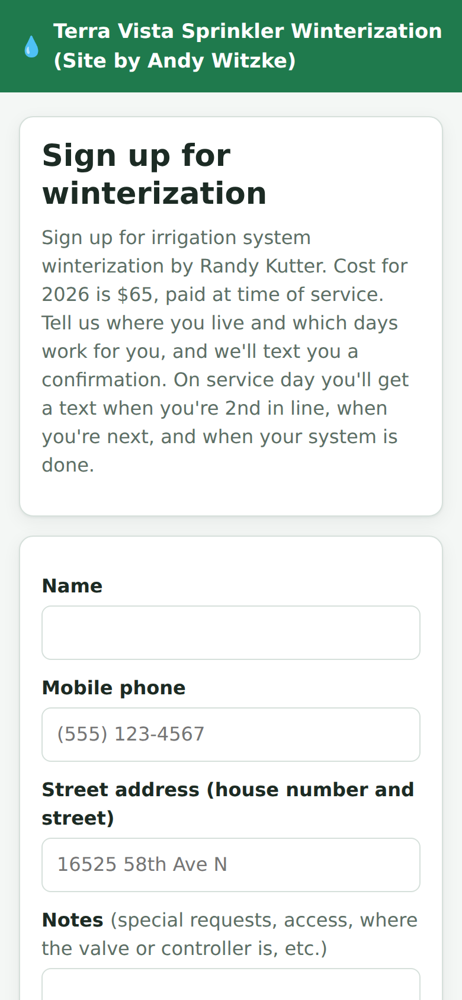
The sign-up page on a phone
Open the website on a phone or computer. The top of the page explains the service and the price for the season.
Enter your name, mobile phone number and street address (house number and street is enough).
Add any notes for the technician, for example gate codes, pets, or where the valve or controller is.
Under Which days work for you?, tick every date you could make work.
For each ticked date, choose Morning, Afternoon or Any time.
Leave Text me about my appointment ticked to get text updates.
Tap Sign me up.
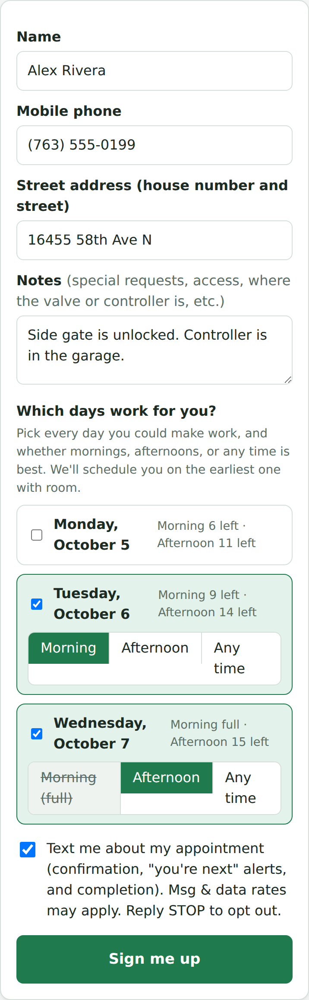
Choosing dates. The morning of Oct 7 is full, so it's crossed out.
Reading the date list
Each date shows how many spots are left, for example Morning 9 left · Afternoon 14 left.
If the morning or afternoon of a date is full, that choice is crossed out. You can still pick the other half or Any time.
If a date is completely full it shows Full and can't be ticked.
Tip: Ticking more than one date makes it more likely you'll get an early slot. You're
booked on the earliest one with room. The others are only used if your visit has to be moved.
If something goes wrong
A red message explains what to fix, such as a missing name or a phone number that isn't 10 digits. If the dates you
picked fill up while you're signing up, the list refreshes. Pick another date and try again.
If you're already signed up for that address, the site texts you your private link again instead of creating a
second booking.
Your confirmation
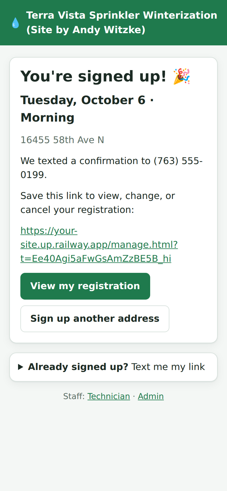
After signing up
The page shows the date and time of day you're booked for. If you asked for texts, you'll also get a confirmation text.
Both include your private link. Keep it: it's how you check your booking and make changes. Anyone with the
link can see and change your registration, so don't post it publicly.
Lost your link? At the bottom of the main page, open Already signed up? Text me my link,
enter your mobile number and tap Send link.
Changing or cancelling
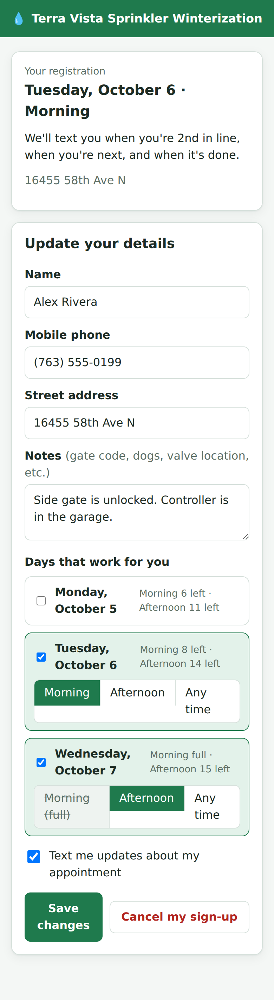
Your private registration page (top part)
Open your private link. The top card shows your current booking. Below it you can:
Change your name, phone, address or notes.
Change which days work for you and the time of day for each.
Turn text updates on or off.
Tap Save changes. If you choose different dates, you're rebooked on the earliest one with room,
and you get a new confirmation text.
To cancel, tap Cancel my sign-up and confirm. You can sign up again later from the main page.
On your service day, once the technician has started, you can no longer change the date or address
here. Call or text the organizer instead. You can still update your notes.
On your service day
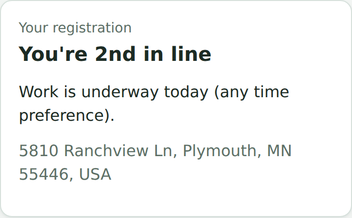
Your place in line updates automatically
Once the technician starts the day, you'll get texts:
You're 2nd in line: the technician has one more stop before yours.
You're next: the technician is on the way. Please unlock gates and make sure the valve is reachable.
Done: your system has been winterized, with any notes from the technician.
Your private link also shows your place in line and refreshes every 30 seconds.
If the technician can't get to you that day, you'll get a text with your new date.
Chapter 3
Staff login
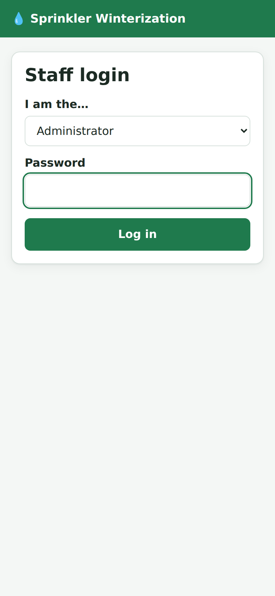
The staff login page
Go to /admin.html or /tech.html. If you aren't logged in, the login page opens.
Choose Technician or Administrator.
Enter the password.
Tap Log in.
You stay logged in on that device for two weeks, or until you tap Log out at the top of the page.
Passwords are set by whoever manages the hosting (see the Appendix). The administrator
password works on both logins. If you change a password, everyone has to log in again.
Chapter 4
For the administrator
The admin page has five tabs: Sign-ups, Dates, Map, Text log and Settings.
Links at the top open the public sign-up page and the technician view.
Dates: opening days for sign-up
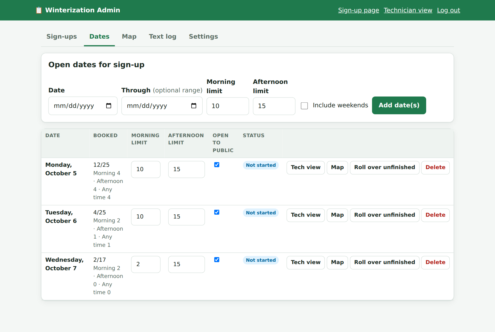
The Dates tab. Oct 7 has its morning limit lowered to 2.
Adding dates
Pick a Date. To add several days at once, also pick a Through date.
Tick Include weekends if the range should include Saturdays and Sundays (they're skipped otherwise).
Set the Morning limit and Afternoon limit (10 and 15 unless you change them).
Click Add date(s).
The dates list
Column / button
What it does
Booked
Total booked out of the day's limit, then how many chose morning, afternoon, and any time. Full means no spots are left.
Morning / Afternoon limit
Type a new number to change it. It saves as soon as you click away.
Open to public
Untick to stop new sign-ups for that date. People already booked stay booked.
Status
Not started, In progress (the technician started it) or Done.
Tech view / Map
Open that date in the technician view, or on the Map tab.
Roll over unfinished
Moves every house on that date that isn't complete to its next available day, and texts them.
Reset status
Shown for started or finished days. Sets the day back to Not started, for example after a test run.
Delete
Removes the date. If people are booked on it, you're warned first. If you go ahead, they're marked Needs a date.
Sign-ups: everyone who registered
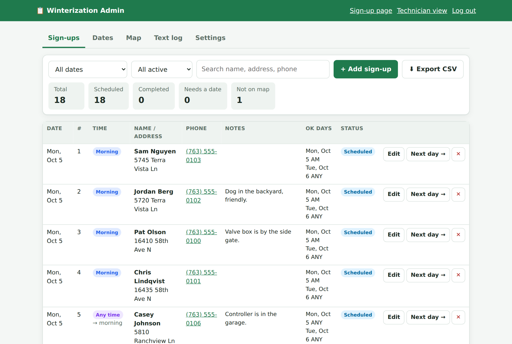
The Sign-ups tab
Filters: show one date (or Needs a date), and one status. The search box matches name, address, phone and notes.
Counts across the top: total, scheduled, completed, needing a date, and Not on map (addresses Google couldn't find).
# is the house's position in that day's route. Time shows what they chose. For "any time" neighbors it also shows which half of the day they were placed in.
OK days lists every date the neighbor said works, with their time of day for each.
Button
What it does
Edit
Change anything about the sign-up (see below).
Next day →
Moves the house to the next open date with room for their time of day, preferring dates they picked. They get a text. If no date has room, they're marked Needs a date.
✕
Deletes the sign-up permanently. No text is sent. To keep a record instead, use Edit and set Status to Cancelled (that doesn't text them either, so let the neighbor know yourself).
retry (under "Not located")
Asks Google to find the address again, for example after you fix a typo.
Adding or editing a sign-up
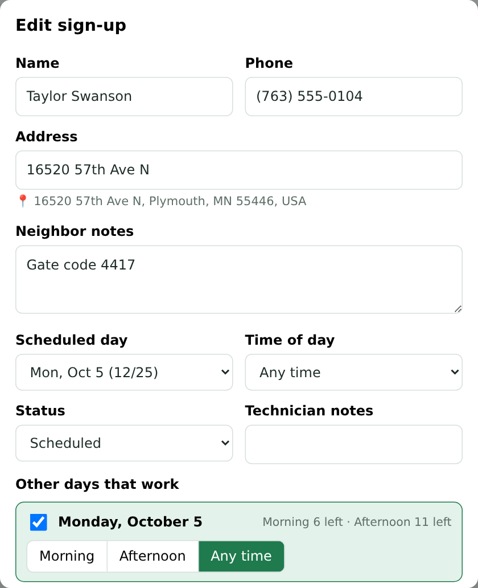
The edit window
Click + Add sign-up (for someone who called or emailed), or Edit on a row.
Scheduled day and Time of day place them directly on a date.
Status: Scheduled, Completed, Needs a date, or Cancelled.
Technician notes appear in their "done" text.
Other days that work are the backup dates used for moves.
Allow over capacity lets you book someone even when that half of the day is full.
Send confirmation text (new sign-ups) or Text them if their date changes (edits).
A name, a 10-digit phone number and an address are required.
Exporting a spreadsheet
Click ⬇ Export CSV. The file opens in Excel, Numbers or Google Sheets. It uses the same date and status
filters as the list, so set those first to export one day. The columns are: service date, time preference, planned
half of the day, route number, status, name, address, the address as Google found it, phone, neighbor notes,
technician notes, acceptable dates, whether texts are allowed, completion time and sign-up time.
Map: where everyone is
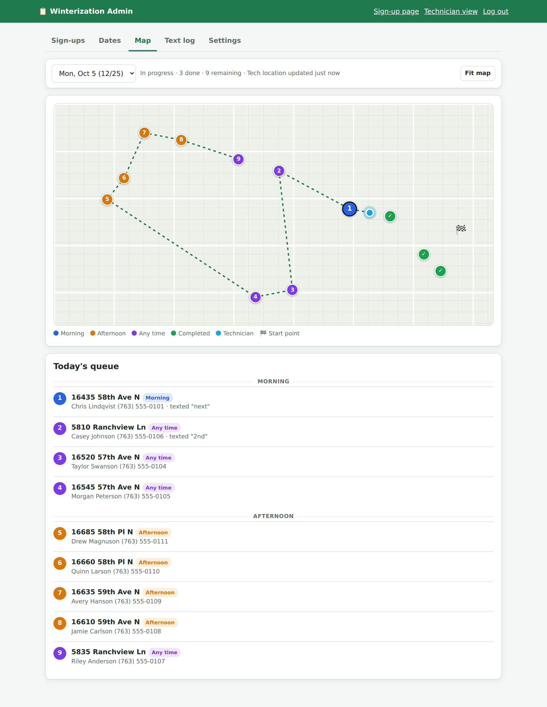
The Map tab during a service day
Choose a date to see its houses numbered in route order. Colors show morning (blue), afternoon (orange) and any time
(purple). Completed houses have a green check. The technician is the light-blue dot, and 🏁 is the start point. The
dashed line is the rest of the route. Below the map, Today's queue lists the remaining stops under Morning and
Afternoon headings, and notes who has already been texted. Choose All sign-ups to see every registration at once.
The map refreshes every 20 seconds. Click a pin to see the neighbor's details, or use Fit map to zoom to all pins.
Text log: every message sent
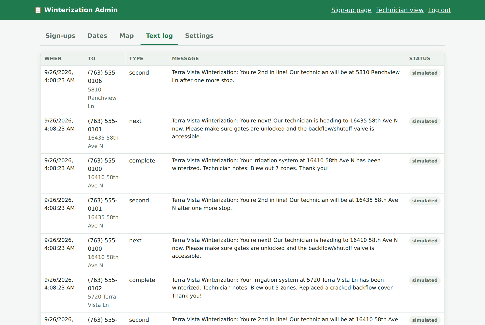
The Text log tab
Shows the latest 500 texts, newest first, with the full message. The Status column shows:
sent: accepted by Twilio for delivery.
failed: Twilio refused it. The reason appears underneath (for example an invalid number).
simulated: Twilio isn't set up yet, so the text was only recorded here, not sent. This is what the screenshot shows.
Settings
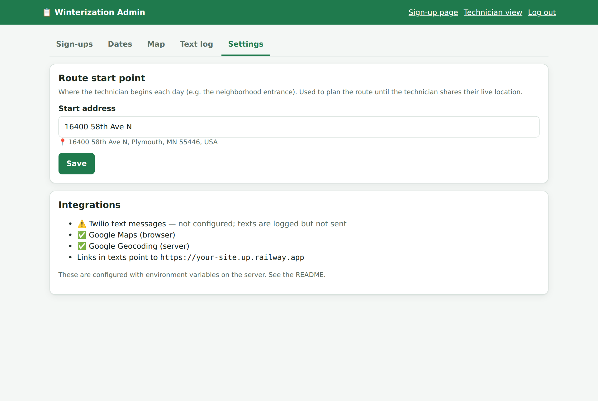
The Settings tab
Route start point is where the technician begins each day, such as the neighborhood entrance. It's used to plan
routes until the technician shares their live location. Enter an address and click Save. The line
below shows the address Google found. Leave it blank to let the route start at whichever end of the neighborhood works best.
Integrations shows whether texting and Google Maps are set up, and the web address used in text links. These are
changed in the hosting settings (see the Appendix).
Chapter 5
For the technician
The technician page is designed for a phone. Log in at /tech.html. It opens the day in progress, or
else today or the next upcoming date. Use the date menu at the top to switch days.
Before you start
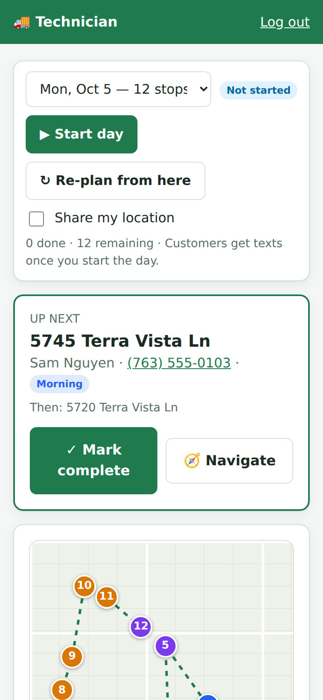
A day that hasn't started yet
The page shows the planned route: a map and a numbered list under Morning and Afternoon headings.
Morning houses come first, in driving order from the start point. Afternoon houses continue from where the morning ends.
"Any time" houses are placed in whichever half is closest, without going over that half's limit.
Until you start, the route updates by itself whenever someone signs up or changes their booking.
Tick Share my location and allow location when your phone asks. Your position then shows on the map for you
and the administrator. If you said no by mistake, turn location back on for this site in your browser settings.
No texts go out yet. Neighbors aren't texted about their place in line until you tap
Start day.
Starting the day
Tap ▶ Start day. This:
locks in the current route order, so it no longer rearranges itself,
texts the first house "you're next" and the second house "you're 2nd in line",
turns on location sharing if it isn't already on.
Working through the queue
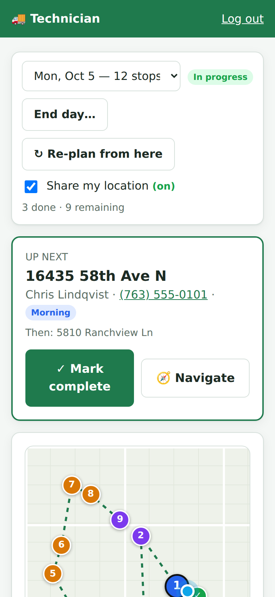
The "Up next" card and map during the day
The Up next card shows the next house: address, name, phone number, time of day, and the neighbor's notes
(highlighted in yellow). It also shows the house after it.
🧭 Navigate opens Google Maps with driving directions to the house.
Tap the phone number to call the neighbor.
✓ Mark complete when you're done (see below).
On the map, the dark-outlined pin is the next stop. The blue dot is you, and the dashed line is the rest of the route.
The summary under the buttons shows how many houses are done and how many remain. The page refreshes every 30 seconds.
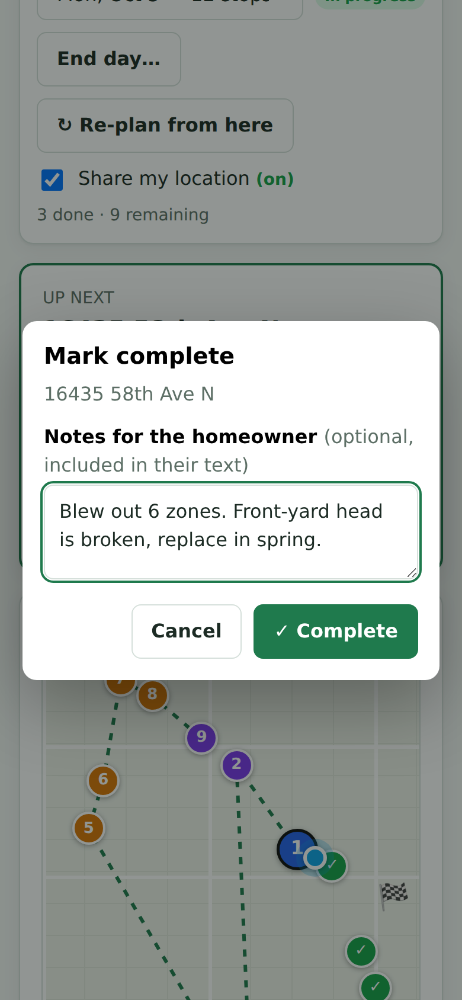
Marking a house complete
Marking a house complete
Tap ✓ Mark complete (or ✓ Complete on any house in the list).
Optionally type notes for the homeowner, such as how many zones you blew out or anything that needs repair. These notes are included in their text.
Tap ✓ Complete.
The homeowner gets a "done" text. The next house gets "you're next", and the one after gets "you're 2nd in line".
Changing the order
▲ / ▼ move a house up or down the list. Moving a house to the top texts them that they're next.
↻ Re-plan from here re-orders all remaining houses starting from where you are now. It still keeps morning houses before afternoon ones.
Can't do a house today?
Tap Move to next day on it. The house moves to the next open date with room for their time of day, and the
neighbor gets a text with the new date.
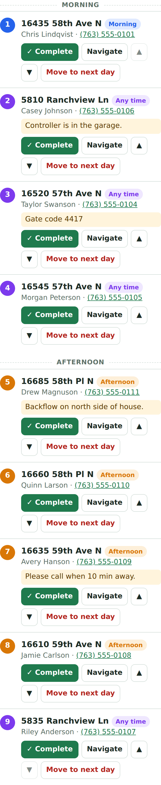
The queue list, split into Morning and Afternoon
The queue list
Below the map, every remaining house is listed in route order under Morning and Afternoon headings.
The circle color matches the neighbor's choice: blue morning, orange afternoon, purple any time. Each house has
✓ Complete, Navigate, ▲ ▼ and Move to next day buttons. If Google couldn't find an
address, the house says not on map.
Completed houses
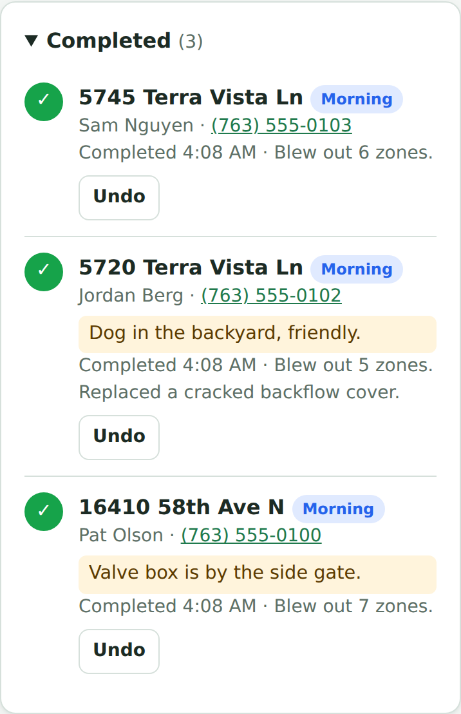
Completed houses, with Undo
Tap Completed at the bottom of the page to see finished houses, the time each was done, and your notes.
Marked one by mistake? Tap Undo. The house goes back to the top of the queue, and the homeowner isn't sent
another "done" text.
Ending the day
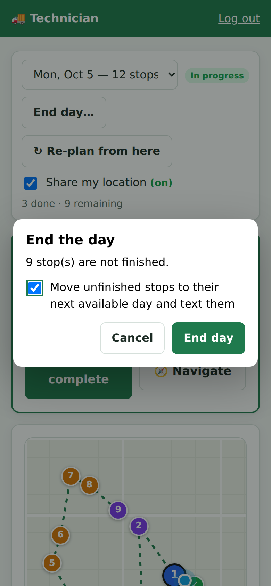
Ending the day with houses left
Tap End day…. If houses are left, leave Move unfinished stops to their next available day and text them
ticked, then tap End day.
Each unfinished house moves to the next open date with room for its time of day. Dates the neighbor picked are tried first.
Each neighbor gets a text with their new date.
A house with nowhere to go is marked Needs a date for the administrator. That neighbor is texted that they'll be rescheduled.
Ended a day too early? Choose that date again and tap ▶ Reopen day.
Location tips
Location only updates while the technician page is open on screen. Phones pause it when the screen locks or the
browser is in the background, so reopen the page between houses.
Your position is sent about every 15 seconds. The administrator's map hides it if it's more than 30 minutes old.
Untick Share my location to stop sharing.
Chapter 6
Text messages
Texts go only to neighbors who ticked Text me about my appointment. Every text is listed on the admin
Text log tab. Each one starts with "Terra Vista Winterization:". Cancelling or deleting a sign-up
from the admin page doesn't send a text.
When
What it says (example)
Right after signing up
You're signed up for Mon, Oct 5 (morning) at 16410 58th Ave N. We'll text you when you're 2nd in line, next, and when it's done. Edit or cancel: [private link] Reply STOP to opt out.
Their booking moves to a new date
Your winterization at 16410 58th Ave N has been moved to Tue, Oct 6 (any time). Details or changes: [private link]
Moved, but no date has room
We weren't able to get to 16410 58th Ave N on Mon, Oct 5. We'll text you as soon as it's rescheduled. Sorry for the delay!
2nd in line (service day)
You're 2nd in line! Our technician will be at 16410 58th Ave N after one more stop.
Next (service day)
You're next! Our technician is heading to 16410 58th Ave N now. Please make sure gates are unlocked and the backflow/shutoff valve is accessible.
Done
Your irrigation system at 16410 58th Ave N has been winterized. Technician notes: Blew out 6 zones. Thank you!
They cancel from their private link
Your sign-up for 16410 58th Ave N has been cancelled. Sign up again anytime at [site address]
They use "Text me my link"
Manage your sign-up for 16410 58th Ave N: [private link]
They try to sign up the same address twice
You're already registered. Manage your sign-up: [private link]
Replies. Texts come from the site's Twilio number. If a neighbor replies STOP, Twilio stops
sending them texts. Other replies aren't read by the website, so tell neighbors to call or text the organizer directly.
Chapter 7
Questions and troubleshooting
A neighbor says they didn't get a text.
Look them up on the Text log. simulated means texting isn't set up yet. failed shows the reason
underneath. If there's no entry, check on the Sign-ups tab that "no texts" isn't shown under their phone number. If
it is, they opted out when signing up.
A house shows "Not located" or isn't on the map.
Google couldn't find the address. Click Edit, correct the address (house number and street name), and save, or
click retry. Houses that aren't on the map still appear in the technician's list, at the end of their half of the day.
A date is full but I need to fit someone in.
Raise that date's morning or afternoon limit on the Dates tab. To add just one person, use Edit, choose
the date, and tick Allow over capacity.
The route order looks wrong.
Set the Route start point under Settings. The technician can also tap ↻ Re-plan from here, or use ▲/▼.
Routes are planned by straight-line distance, so a river or dead end can occasionally make the order less than ideal.
I did a test run and want to start the day over.
On the Dates tab, click Reset status for that date. To undo test completions, the technician can tap
Undo, or you can edit each sign-up and set its status back to Scheduled.
Someone needs to be moved to a specific date.
Click Edit, choose the Scheduled day and Time of day, tick Text them if their date changes, and save.
The technician's location isn't showing.
Make sure Share my location is ticked and shows (on), that the page is open on screen, and that location
is allowed for the site in the phone's settings. Location sharing only works on the secure (https) address.
The staff pages keep asking me to log in.
Logins last two weeks per device. If everyone is logged out after every update, the hosting is missing the
SESSION_SECRET setting (see the Appendix).
Appendix
Hosting settings
For whoever manages the site on Railway. Settings are entered in Railway under the service's Variables tab.
After changing them, deploy the changes when Railway prompts you. Never put passwords or keys in the GitHub repository.
Variable
What it's for
ADMIN_PASSWORD
Administrator password. Required.
TECH_PASSWORD
Technician password. Required.
SESSION_SECRET
Any long random string. Keeps staff logged in across updates.
ADDRESS_SUFFIX
Plymouth, MN 55446. Added to addresses so Google finds them in the neighborhood.
TZ_NAME
America/Chicago (the default). Used for "today".
GOOGLE_MAPS_API_KEY
Google key with the Maps JavaScript API and Geocoding API turned on.
Twilio account details and the number texts come from. Until these are set, texts show as "simulated".
DEFAULT_AM_CAPACITY, DEFAULT_PM_CAPACITY
Limits pre-filled for new dates (10 and 15).
BASE_URL
Only needed with a custom domain. Otherwise the Railway address is used automatically.
Keeping sign-ups safe
The service needs a volume attached at /data. Without it, sign-ups are lost whenever the site updates.
Keep the service at one replica.
For a backup, use Export CSV on the admin Sign-ups tab.
Google Maps key
In Google Cloud Console, limit the key to the site's address (https://your-site.up.railway.app/*) so others can't use it.
Twilio
US texting from a website requires Twilio's business registration (A2P 10DLC) or a verified toll-free number. Until
it's approved, texts may not be delivered.